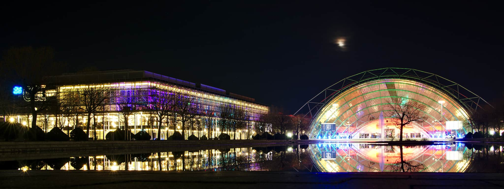
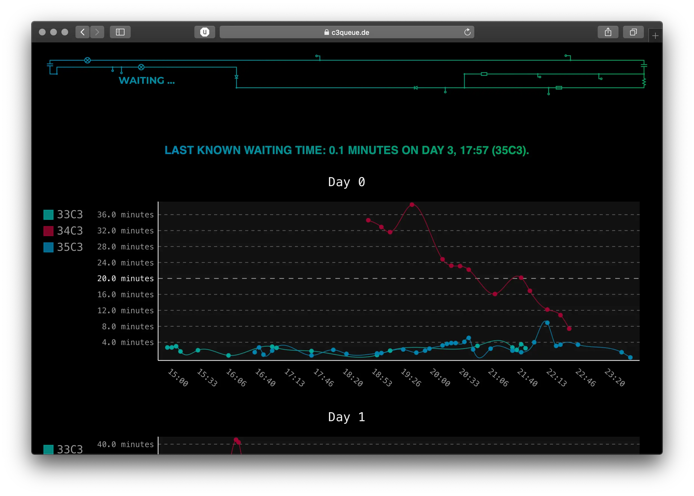
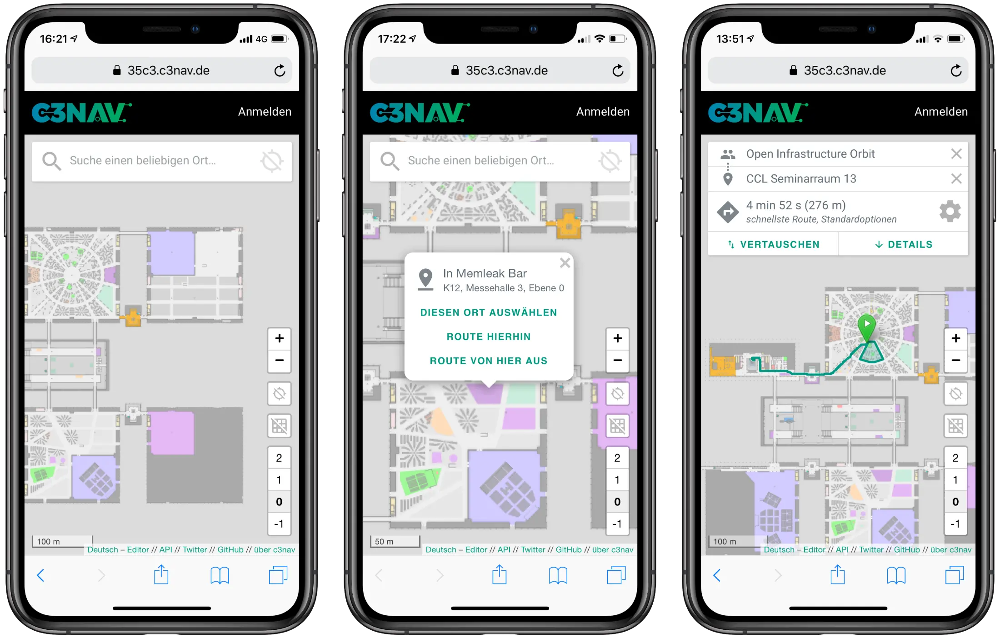

35C3
 Foto: Leah Oswald CC BY 2.0
Ich war auf dem 35. Chaos Communication Congress in Leipzig, kurz: 35C3. Der Congress ist eine unglaublich vielfältige Veranstaltung, die mit Hackerkongress nur sehr unzureichend beschrieben ist. Es gibt ein sehr hochwertiges Vortragsprogramm, ein umfangreiches Partyprogramm, Workshops – und am meisten Spaß macht am Ende immer noch, sich einfach durch die bunt blinkenden Hallen treiben zu lassen und jeden Tag neue Details zu entdecken. Was Congress ist, versucht die Dokumentation All Creatures Welcome zu erklären, die ich hier mal (noch ungesehen) empfehle.
Das hier ist eine wilde Sammlung von Gedanken und Informationsschnipseln zum 35C3, die keinerlei Anspruch auf Vollständigkeit hat, aber die Großartigkeit des Congress' zumindest ein wenig dokumentieren soll. Letztes Update: 6. Januar 2019.
Wahllose Gedanken
- Ich war gleichermaßen begeistert und überrascht davon, wie sehr sich der Congress seit letztem Jahr weiterentwickelt hat. Zum einen ist er natürlich größer geworden, zum anderen hat aber auch das Ausmaß an Dekoration und umfangreichen Aufbauten deutlich zugenommen. Insbesondere die Wastelands mit Kranlounge und Memleak Bar waren super.
- Großartigerweise gab es mit Discodrama wieder eine große Lounge, die noch nicht ganz das Hamburg-Niveau erreicht hat, aber trotzdem in jeder Großstadt als feiner Club durchgehen würde. Sehr cooles (und namhaftes) Lineup außerdem – von dem ich allerdings sehr viel verpasst habe. Unter anderem: Vril, Dominik Eulberg, Super Flu, Kollektiv Turmstraße. Ganz großartig und kurios auch: Das weltweite Netzwerk für ein bedingungsloses Grundeinkommen.
- Das erste, was beim Betreten der Glaswurst auffiel: Riesige Antifa-Flagge. Ich habe mich sehr gefreut.
- Beim vierten Congress-Besuch habe ich es endlich geschafft und meine erste Engel-Schicht absolviert. Und die zweite. Nächstes Mal werden es hoffentlich noch ein paar mehr.
- Das Essen aus dem Congress ist weiterhin aberwitzig teuer und einigermaßen schrecklich. Das ist schade für eine Veranstaltung, die sonst so viel mit der Fusion gemein hat, auf der das mit dem Essen herausragend gut, vegetarisch und fair funktioniert.
- Birds aren't real: Kann ich bestätigen. (Und wer es nicht glaubt, möge nachts über den Augustusplatz laufen.)
- Ich bin unterm Strich ziemlich umgehauen, auf welch hohem Niveau Congress-Vorträge sich bewegen. Das ist jetzt keine so bahnbrechend neue Erkenntnis, wurde mir aber dieses Jahr recht deutlich gewahr: Angesichts einer unendlich langen Liste an Vorträgen, die ich gerne gesehen hätte, zum anderen angesichts der Vorträge, die ich gesehen habe, und die praktisch ausnahmslos inhaltlich stark und außerdem gut präsentiert waren.
c3queue.de

Wie lang steht man eigentlich für ein Einlassbändchen an, wenn man den Congress an Tag 0 oder Tag 1 mit dem Ticket erstmals betritt? Diese Frage beantwortet c3queue.de: Ankommende bekommen am Ende der Warteschlange einen QR-Code in die Hand gedrückt, der an der Kasse gescannt wird - die verstrichene Zeit landet in einer Grafik, aus der sich ablesen lässt, wann wie lange gewartet wurde. Ich finde das genial – weil es eine ebenso einfache wie kluge Lösung ist, und weil es zeigt, dass die Ankunftsschlange inzwischen derart gut optimiert ist, dass es praktisch überhaupt nicht mehr zu langen Wartezeiten kommt.
c3nav.de

Ich behaupte manchmal von mir, nicht den allerschlechtesten Orientierungssinn zu haben. So richtig beweisen konnte ich das auf dem Congress allerdings nicht. Umso glücklicher bin ich, dass es c3nav.de gibt, das ziemlich zuverlässig verrät, wie man von A nach B kommt. Die Android-App ist offenbar sogar in der Lage, den eigenen Standort mittels WLAN zu ermitteln – das konnte ich aus offensichtlichen Gründen allerdings nicht ausprobieren.
35C3.info
Bisher verspürte ich noch während jedem Congress den Wunsch, eine Linkliste anzulegen, um die wichtigsten Seiten und Tools schnell wiederzufinden. Dieses Jahr gab es genau das löblicherweise in Form von 35C3.info.
Talks
Es folgt eine (mehr oder weniger) vollständige Liste der Talks, die ich entweder live oder im Stream gesehen habe. Teilweise mit ein paar Anmerkungen. Allesamt sehenswert – und hier in überwiegend zufälliger Sortierung. Wesentlich länger als diese Liste ist meine Watchlist – wie viel ich davon tatsächlich schaffen werde, ist fraglich.
Entertainment
- Die shitty robots waren schon auf dem 33C3 eines meiner Highlights und haben auch diesmal nicht enttäuscht
- Mit einem absolut und unerwartet epischem Finale
- SCHRUBBI
Den Chaos Communication Slam habe ich teilweise gesehen und bin zur Einsicht gekommen, dass ich Poetry Slams nach wie vor nur wenig abgewinnen kann. Meine Abenteuer im EU-Parlament von Martin Sonneborn war kurzweilig und unterhaltsam, bei nüchterner Betrachtung aber auch arg selbstbeweihräuchernd.
Gesehen
Best of Informationsfreiheit von Arne Semsrott, Rainer Rehak, Andre Meister & Anna Biselli
Court in the Akten von Arne Semsrott, Stefan Wehrmeyer & Walter Palmetshofer
- Update zu OpenSchufa und OffeneGesetze.de
- In diesem Zusammenhang auch spannend: Das Projekt Open Legal Data, das Gesetzestexte und Urteile sammelt
Chaos im Fernsehrat von Leonhard Dobusch
- Leonhard Dobusch mit Anekdoten aus dem Fernsehrat, der alles daran setzt, so wenig transparent wie möglich zu arbeiten
- Außerdem schlägt er die Schaffung einer Internetintendanz vor, die für den Bau einer Plattform, Mittelvergabe und Kuratierung öffentlich-rechtlicher Inhalte verantwortlich wäre – ohne wirklich tief im Thema zu stecken klingt das nach einer vernünftigen Idee
All Your Gesundheitsakten Are Belong To Us von Martin Tschirsich
- Sehr unterhaltsamer Vortrag, der an Die fabelhafte Welt des Mobilebankings erinnert
- Nach dem Angucken hat man definitiv keine Lust mehr auf digitale Gesundheitsakte
Du kannst alles hacken – du darfst dich nur nicht erwischen lassen. von Linus Neumann & Thorsten Schröder
Mind the Trap: Die Netzpolitik der AfD im Bundestag von Noujoum
"Das ist mir nicht erinnerlich." − Der NSU-Komplex heute von Caro Keller (NSU-Watch)
Locked up science von Claudia Frick (@FuzzyLeapfrog)
- Kannte – vor allem dank Methodisch inkorrekt – vieles schon. Dennoch eine sehr schöne und verständliche Einführung in das Thema Closed Access inklusive einem Überblick zur aktuellen Situation
- Ich kenne jetzt den Unterschied zwischen Green, Gold und Platinum Open Access
Frontex: Der europäische Grenzgeheimdienst von Matthias Monroy
Desinformation und Fake News - Bekämpfung und Verifizierung leicht gemacht von Robert Clausen
- Bin hier erst verspätet reingeplatzt (und habe den Anfang auch noch nicht nachgeholt), da lief aber eine interessante Vorstellung von Tools, mit denen sich Bilder, Videos und andere Informationen verifizieren lassen – nützlich.
Internet of Dongs von Werner Schober
Watchlist
Ein kleiner Teil besagter Watchlist, der im Laufe der Zeit womöglich weiter wachsen wird.
"The" Social Credit System von Toni
Security Nightmares 0x13 von frank & Ron
Datenschutz für Neulandbürger von Beata Hubrig
Polizeigesetze von Marie Bröckling & Constanze Kurz
Die dreckige Empirie von Aiko
Butterbrotdosen-Smartphone von bücherratten
How does the Internet work? von Peter Stuge
Die verborgene Seite des Mobilfunks von Peter Schmidt
Verhalten bei Hausdurchsuchungen von qbi & Kristin Pietrzyk
Venenerkennung hacken von starbug & Julian
SiliVaccine: North Korea's Weapon of Mass Detection von Mark Lechtik
Smart Home - Smart Hack von Michael Steigerwald
Datenschutz für Neulandbürger von Beata Hubrig
Introduction to Deep Learning von teubi
Archäologische Studien im Datenmüll von Letty & Katharina Nocun
How Facebook tracks you on Android von Frederike Kaltheuner & Christopher Weatherhead
Kickstart the Chaos: Hackerspace gründen für Anfänger von Thorben Dittmar & Samuel Brinkmann
Wertschätzend kommunizieren - durch vier Schritte "in Kontakt kommen" von Ludger
Neusprech Crashkurs von MissInformation
Geschichten aus der Cobol Gruft von Habrok
#afdwegbassen: Protest, (Club-)Kultur und antifaschistischer Widerstand von Reclaim Club Culture & Rosa Rave
Chatbots im Kundenservice - Are we still talking about pink dildos?? von Silia Nebelstreif
G10, BND-Gesetz und der effektive Schutz vor Grundrechten von Klaus Landefeld
Updates von der europäischen Außengrenze von Nico & Nina Gassmann
Sontiges
Abstruse Linkliste
Beim Auf-dem-Congress-Rumlaufen und hier Dinge-Zusammenschreiben bin ich über den ein oder anderen Link gestolpert, der recht wenig mit der Veranstaltung an sich zu tun hat. Aber weil ich gerade keinen besseren Platz habe, das zu speichern, landet es jetzt hier:
- Fotos vom 18C3
- Fotos vom 19C3
- Ich habe vor Urzeiten eine Mac-App genutzt, die Markdown in schönes HTML konvertiert hat, mit mehreren Designoptionen. Finde ich nicht mehr. Daher jetzt (recht erfolgreich, meine ich) markdown-styles für diesen Post verwendet.